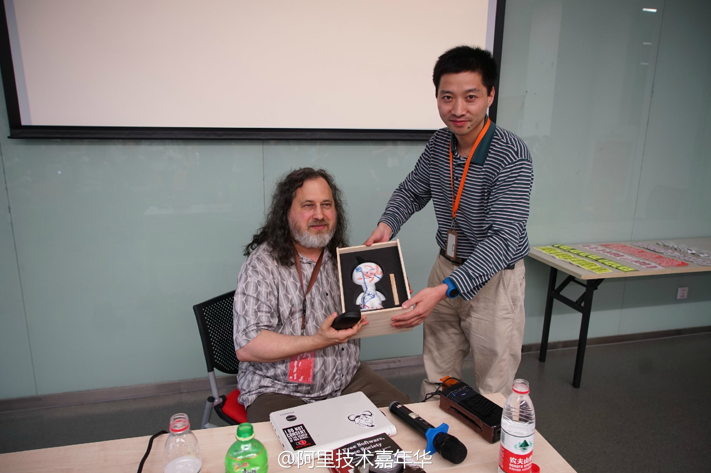

上一次RMS来中国时见过，他有个细节跟这个活动的主邀人@徐继哲 有些像，时不时会玩弄下自己的长发。//@淘宝正明:转发微博@阿里云云栖号:#ATA技术人生#GNU之父、自由软件精神领袖理查德-斯托曼于5月19日到阿里巴巴集团的西溪园区交流和分享自由软件的精神，分享现场气氛灰常活跃，Richard Auction被一位同学幸运拍中，LVS发明人正明和RMS互赠礼物，最后RMS和开源爱好者们合影，教主对阿里的西溪园区流连忘返。@阿里巴巴 @阿里巴巴集团招聘 
#姣姣#说她班上有个男生特恶心，总是把笔放在嘴里舔啊舔的。明俊回说：“你还吃手呢，不是更恶心吗？”。当晚，姣姣就自己找纱布和胶带，把大拇指缠上了。明俊看闺女决心这么大，就做了戴手上的布套子，姣姣还就戴着睡觉了。